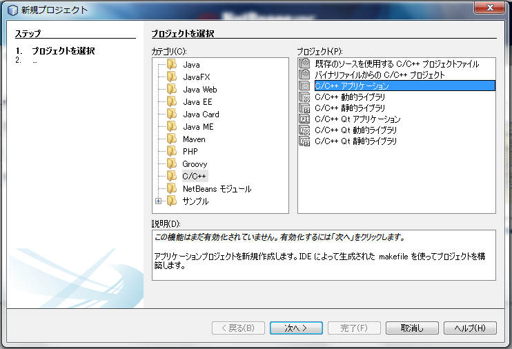
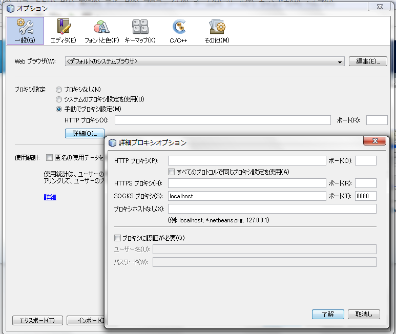
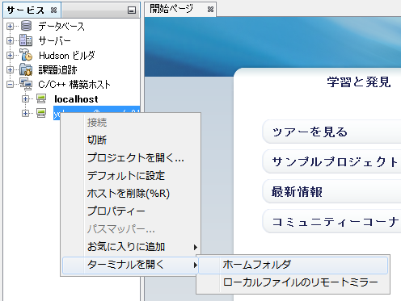

リモート解析環境/NBリモート開発設定
NetBeans IDE はインストールしたとします。C/C++のパックも入れるように。
手順
まずはC/C++を有効化します。[ファイル]→[新規プロジェクト]→[C/C++ アプリケーション]を選択→[次へ]
C/C++が有効化されたら一旦取消し。
[ウィンドウ]→[サービス]をクリックし、サービスウィンドウを表示する。
[C/C++ 構築ホスト]を右クリック→[新規ホストを追加]
ホスト名、ポート番号(22)を入力→[次へ]
ユーザー名、認証方法を入力→[次へ] リモートサーバーの環境が自動で認識されるはず。
概要を確認し、[次の方法でプロジェクトファイルにアクセス]を[自動コピー]にして[完了]
必要であれば、[ツール]→[オプション]→[一般]タブ→[プロキシ設定]を行う。
さらに、サービスウィンドウに新しく追加された構築ホストを選んで右クリック→[ターミナルを開く]からターミナルを開くことができる。
